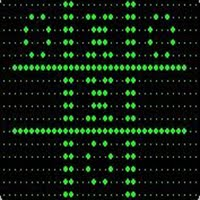

EDSAC & OXO
OXO was an early video game created by Alexander Douglas when he was a Ph.D. student at Cambridge University in England. OXO was played on an EDSAC computer. Players could choose to move first or allow the computer to do so. They entered their moves by using a rotary telephone and saw the game on a small CRT (cathode ray tube). OXO was not played very much outside Cambridge.
OXO
http://www.mauriciogiraldo.com/vgline/sites/default/files/imagecache/event-big/ttt_play2.png

EDSAC with Rotary Phone & CRT Screens
https://upload.wikimedia.org/wikipedia/commons/d/d2/EDSAC_(23).jpg